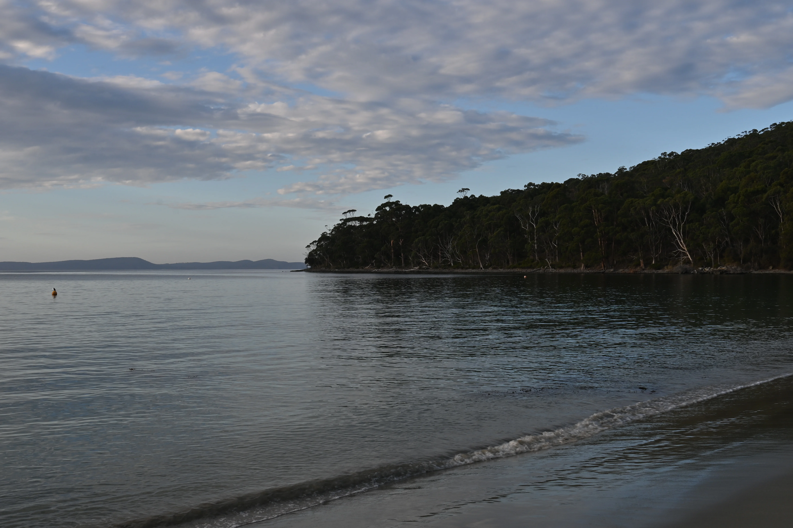
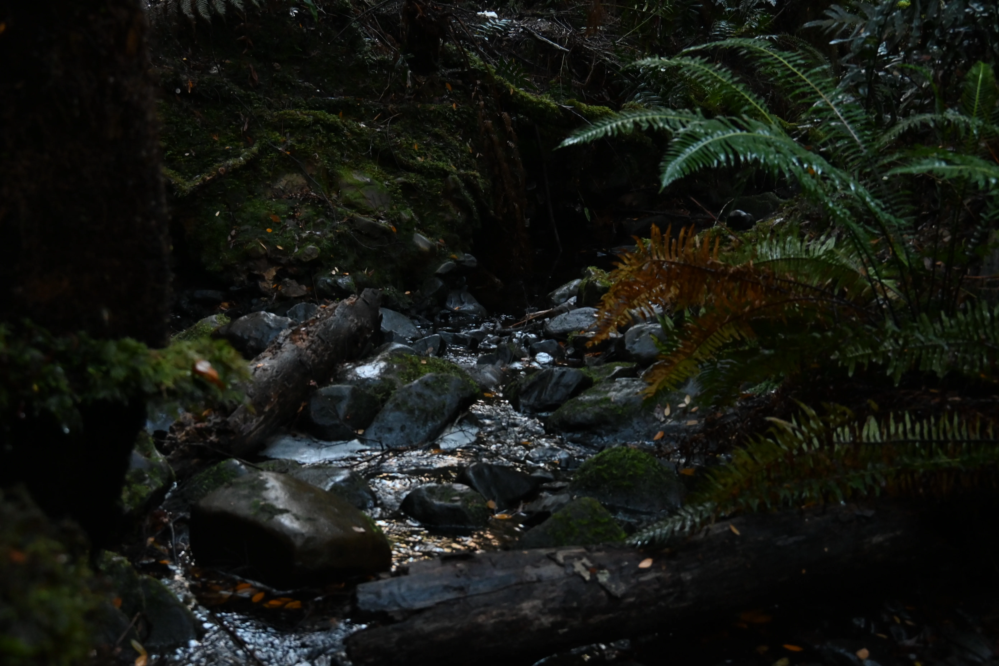
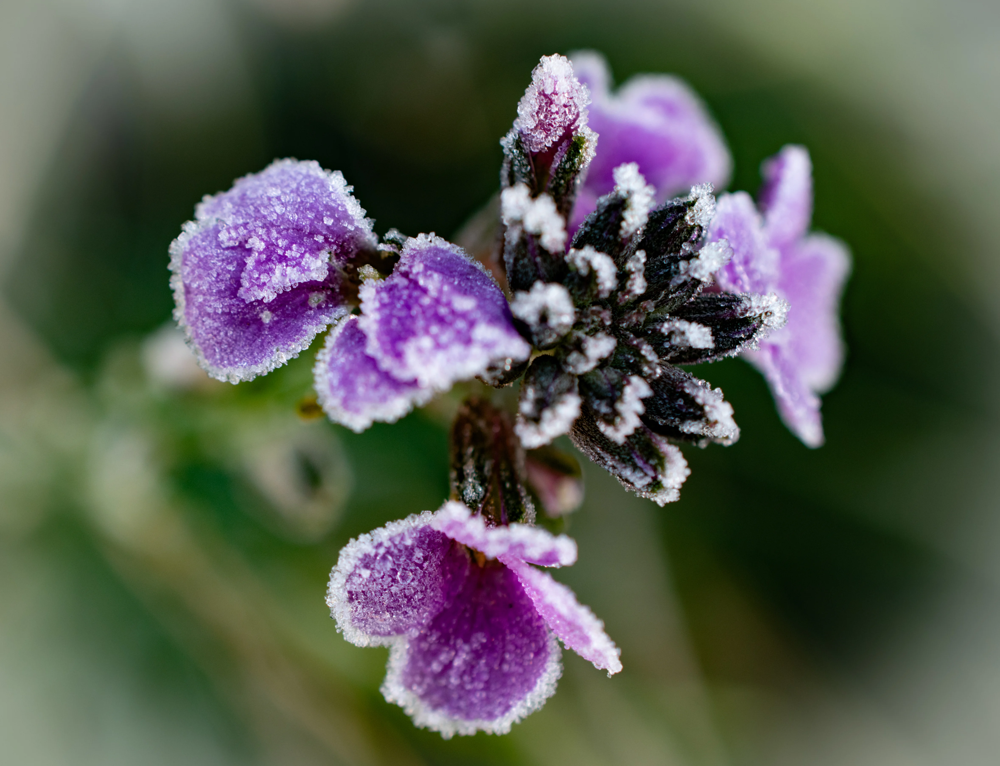
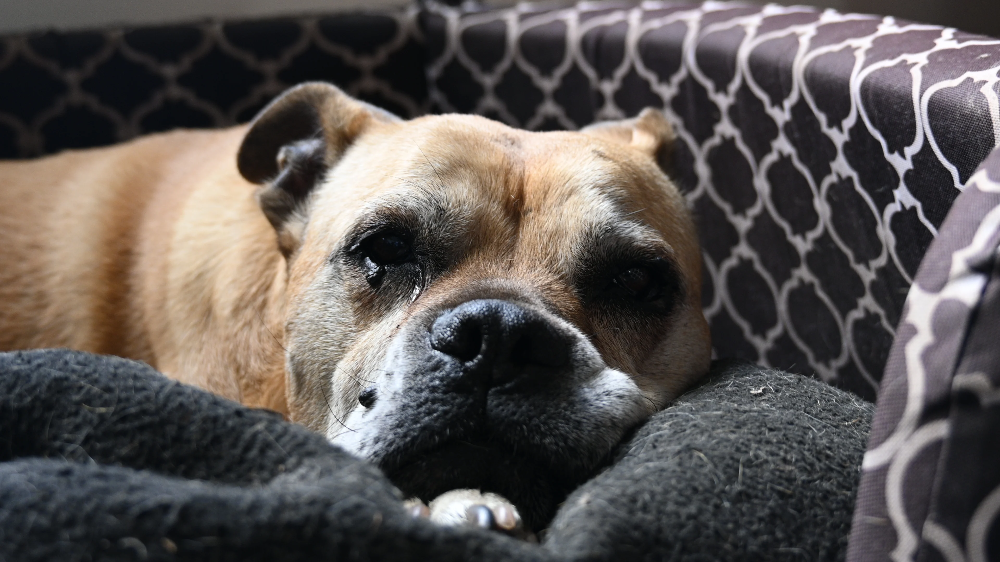

We are a mother-and-son photography team passionate about capturing Tasmania's incredible landscapes, wildlife, motorsport, and the moments that make every scene unique.

Beautiful coastlines from around Tasmania.

Explore Tasmania's stunning forests, mountains and landscapes.

Discover the unique flora of Tasmania.

Animals from around Tasmania.